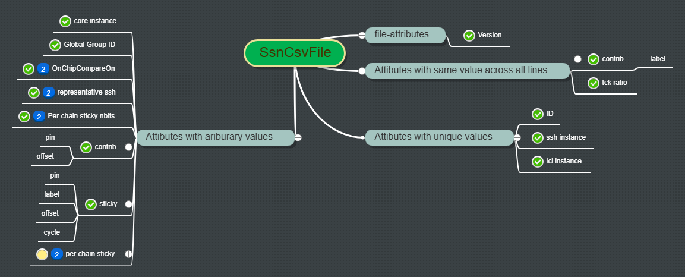

SsnCsvFile Type
In order to manage the *_ssn.csv file that is generated along with *.atp file during pattern conversion by ATEGEN from Test Insight, we carefully designed a Type named SsnCsvFile with following features:
- Reads the
ssn.csvfile and extract only useful information. - Validates the information that it is not violating any rules set by our implementation.
- Handles different versions of
ssn.csvfile sinceSSNis an evolving technology. - Complies to ALL CSRA rules:
- ✔️ Is Extensible
- ✔️ Is Backward Compatible
- ✔️ Is Tested
- ✔️ Is Documented (this doc!)
Background about the ssn.csv file
Here is an example of a Legacy *_ssn.csv file:
| //ID | Core instance | Ssh instance | Icl instance | Group ID | Num bits | Contrib pin | Contrib offset | Contrib label | Sticky pin | Sticky offset | Sticky cycle | Sticky label |
|---|---|---|---|---|---|---|---|---|---|---|---|---|
| 0 | subsystemB/corec_i1 | subsystemB/corec_i1/identical_core_rtl_tessent_ssn_scan_host_1_inst | subsystemB.corec_i1.identical_core_rtl_tessent_ssn_scan_host_1_inst | 2 | 1 | ijtag_tdi | 809 | disable_contribution0 | ijtag_tdo | 39 | 16717 | sticky_status0 |
| 1 | subsystemA/corec_i2 | subsystemA/corec_i2/identical_core_rtl_tessent_ssn_scan_host_1_inst | subsystemA.corec_i2.identical_core_rtl_tessent_ssn_scan_host_1_inst | 3 | 1 | ijtag_tdi | 433 | disable_contribution0 | ijtag_tdo | 24 | 16702 | sticky_status0 |
| 2 | subsystemA/corec_i1 | subsystemA/corec_i1/identical_core_rtl_tessent_ssn_scan_host_1_inst | subsystemA.corec_i1.identical_core_rtl_tessent_ssn_scan_host_1_inst | 3 | 1 | ijtag_tdi | 248 | disable_contribution0 | ijtag_tdo | 16 | 16694 | sticky_status0 |
| 3 | subsystemA/coreb_i1 | subsystemA/coreb_i1/unique_core_rtl_tessent_ssn_scan_host_1_inst | subsystemA.coreb_i1.unique_core_rtl_tessent_ssn_scan_host_1_inst | 1 | 1 | ijtag_tdi | 63 | disable_contribution0 | ijtag_tdo | 8 | 16686 | sticky_status0 |
- The first row is a header.
- Each row contains attributes of one
ssh-icl-instance. - Each column is considered one attribute of
ssh-icl-instancesand the name of that attribute is defined in the header row.
For ssn On-Chip Compare, we need to make sure that some of the attributes should be uniform across all ssh-icl-instances and some others must have distinctive value among all.
And for instance-specific attributes we shall be able to look them up, so we use a Dictionary<instanceID, Dictionary<attributeName, attributeValue>>, but for uniformed attributes we do not need to store them under each ssh-icl-instances in the Dictionary. Therefore we decide to create the SsnCsvFile type of below structure:
Proposal

There are 4 types of attributes that stores in an
ssn.csvfile:
- Single appearance attribute.
- there is only one case currently, which is the SsnCsv version and is on the first line with leading double-slash
//.- default version is v1.0 if the first line is otherwise, this is to keep compatibility with legacy
ssn.csvfiles.- Attributes whose values are uniform across all instances.
- e.g.
Contrib labelandTck ratioshall be the same across all instances.- validation will be performed upon parsing the SsnCsv file.
- Attribute's value will be stored at object level as well as in the per
ssh-icl-instanceDictionary.- Attributes whose values must be unique across all instances.
- e.g.
ssh instanceandicl instanceshall be distinct across all instances.- validation will be performed upon parsing the SsnCsv file.
- Attribute's value will be stored in the per
ssh-icl-instanceDictionary.- Attributes whose values have no rules
- e.g.
Group IDandCore Instancecan share same value across instances.- Attribute's value will be stored in the per
ssh-icl-instanceDictionary.
Definition(Constructor)
/// <summary>
/// Construct a new <see cref="SsnCsvFile"/> object and load the specified OnChipCompare _ssn.csv file.
/// </summary>
/// <param name="fileName">The path to the ssn.csv file name</param>
/// <param name="instanceKey">The key attribute for indexing the ssh-icl-instances,
/// Must be an attribute that has distinct values for each line.
/// Default is the first column which is 'ID'</param>
public SsnCsvFile(string fileName, string instanceKey = "//ID")
Properties
#region Properties
public string CsvVersion { get; private set; } = string.Empty; // The version of the ssn setup csv file. It shall appear in the first line of the csv file, which starts with "//SSN instances". Default to "v1.0" if not specified.
public string ContribPin { get; private set; } = string.Empty; // The pin name of the contribution bits in the ssn setup pattern.
public string ContribLabel { get; private set; } = string.Empty; // The label for the contribution bits in the ssn setup pattern.
public string StickyPin { get; private set; } = string.Empty; // The pin name of the sticky bits in the ssn end pattern.
public string StickyLabel { get; private set; } = string.Empty; // The label for the sticky bits in the ssn end pattern.
public string TckRatio { get; private set; } = string.Empty; // The TCK ratio of the ssn pattern.
// it is used to determine the length of the contribution bits in the ssn setup pattern and length of sticky bits in the ssn end pattern.
// in v1.0, the name was "Num bits", in v2025.7 it is changed to "Tck ratio".
public Dictionary<string, Dictionary<string, string>> SshInstances { get; private set; } = new(); // Dictionary of ssh instances, where the keyAttribute is the instance name and the value is a dictionary of attributes and their values.
#endregion
Methods
There is no public methods so far. Private methods are serving the constructor function only. Data validation is performed upon loading the file and creating the object, once it is created, this object serves as the unbiased data source for use with other ssn related C#RA codes.
Example
// Load the SSN Setup csv file.
var ssnSetupCsv = new SsnCsvFile(ssnSetupCsvFileName);
// get global attributes:
string _contribPin = ssnSetupCsv.ContribPin;
string _contribLabel = ssnSetupCsv.ContribLabel;
var _tckRatio = int.TryParse(ssnSetupCsv.TckRatio, out var tckRatio) ? tckRatio : 0;
// get per-instance attributes:
foreach (var instance in ssnSetupCsv.SshInstances) {
// get attributes
var globalGroupID = instance.Value.ContainsKey("Group ID") ? instance.Value["Group ID"] : string.Empty;
}